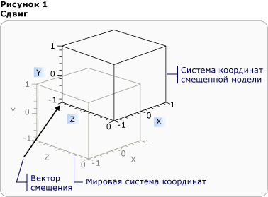
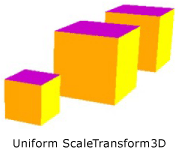
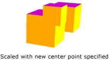
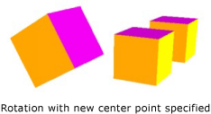
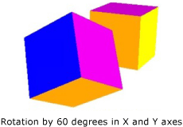

Общие сведения о трехмерных преобразованиях
В этом разделе описывается применение преобразований к трехмерным моделям в графической системе Windows Presentation Foundation (WPF). Преобразования позволяют разработчикам перемещать модели, изменять их размер и направление, при этом не затрагивая их базовые определяющие значения.
Координаты трехмерного пространства
Трехмерное графическое содержимое в Windows Presentation Foundation (WPF) инкапсулировано в элементе, Viewport3D, который может участвовать в структуре двумерного элемента. Графическая система рассматривает Viewport3D как двумерный визуальный элемент, подобный многим другим в Windows Presentation Foundation (WPF). Viewport3D функционирует как окно — окно просмотра — трехмерной сцены. Говоря точнее, это поверхность, на которую проецируется трехмерная сцена. Хотя Viewport3D можно использовать с другими двумерными объектами рисования в том же графе сцены, двумерные объекты нельзя преобразовать в трехмерные внутри Viewport3D. В следующем обсуждении описанное координатное пространство расположено в элементе Viewport3D.
Система координат Windows Presentation Foundation (WPF) для двумерной графики начинается в левом верхнем углу области отрисовки (обычно областью отрисовки является экран). В двумерной системе положительные значения оси X откладываются вправо, а оси Y — сверху вниз. В трехмерной системе координат начало располагается в центре отрисовываемой области, положительные значения оси X откладываются вправо, оси Y — снизу вверх, а оси Z — из центра к наблюдателю.

Сравнение системы координат
Пространство, определяемое этими осями, является стационарной системой отсчета координат для трехмерных объектов в приложении Windows Presentation Foundation (WPF). При построении моделей в этом пространстве и создании источников света и камер для их отображения необходимо отличать стационарную систему отсчета координат ("мировую систему координат") от локальной системы отсчета, которая создается для каждой модели при применении к ней преобразований. Помните, что в зависимости от освещения и настроек камеры объекты в мировой системе координат могут выглядеть различным образом или быть полностью невидимыми. При этом положение камеры не изменяет расположения объектов в мировой системе координат.
Преобразование моделей
При создании моделей в сцене им задается определенное местоположение. Для поворота моделей, изменения их размера или перемещения внутри сцены не следует изменять вершины, определяющие сами модели. Вместо этого следует применять к моделям преобразования, как и в двумерных системах.
Каждый объект модели имеет Transform свойства с помощью которого можно перемещать, повторно разобраться с функциональностью или изменении размера модели. При применении преобразования все точки модели фактически смещаются с помощью определенного вектора или значения, заданного преобразованием. Другими словами, выполняется преобразование координатного пространства, в котором определена модель ("пространство модели"), при этом значения, составляющие геометрию модели в системе координат всей сцены ("мировое пространство"), не изменяются.
Преобразования перевода
Трехмерные преобразования наследуют от абстрактного базового класса Transform3D; к ним относятся классы аффинного преобразования TranslateTransform3D, ScaleTransform3D, и RotateTransform3D. Windows Presentation Foundation (WPF) Трехмерная система также предоставляет MatrixTransform3D класс, который позволяет указать те же преобразования в более коротких матричных операциях.
TranslateTransform3D перемещает все точки в Model3D в направлении выбранного вектора смещения указывается с помощью OffsetX, OffsetY, и OffsetZ свойства. Например, если задать вершине куба с координатами (2, 2, 2) вектор смещения (0, 1,6, 1), то вершина (2, 2, 2) будет перемещена в точку (2, 3,6, 3). В пространстве модели вершина куба останется в точке (2, 2, 2), но, поскольку связь пространства модели с мировым пространством изменилась, координата пространства модели (2, 2, 2) будет находиться в точке (2, 3,6, 3) мирового пространства.

Перевод со смещением
В следующем примере кода показано, как применить перевод.
<Page xmlns="http://schemas.microsoft.com/winfx/2006/xaml/presentation"
xmlns:x="http://schemas.microsoft.com/winfx/2006/xaml" >
<DockPanel>
<Viewbox>
<Canvas Width="600" Height="201">
<!-- The Viewport3D provides a rendering surface for 3-D visual content. -->
<Viewport3D Name="MyAnimatedObject"
ClipToBounds="True" Width="600" Height="150"
Canvas.Left="0" Canvas.Top="10">
<!-- Defines the camera used to view the 3D object. -->
<Viewport3D.Camera>
<PerspectiveCamera x:Name="myPerspectiveCamera" Position="0,0,2" LookDirection="0,0,-1"
FieldOfView="60" />
</Viewport3D.Camera>
<!-- The ModelVisual3D children contain the 3D models -->
<Viewport3D.Children>
<!-- This ModelVisual3D defines the light cast in the scene. Without light, the
3D object cannot be seen. -->
<ModelVisual3D>
<ModelVisual3D.Content>
<DirectionalLight Color="#FFFFFF" Direction="-0.612372,-0.5,-0.612372" />
</ModelVisual3D.Content>
</ModelVisual3D>
<ModelVisual3D>
<ModelVisual3D.Content>
<GeometryModel3D>
<!-- The geometry specifes the shape of the 3D plane. In this case, a flat sheet is created. -->
<GeometryModel3D.Geometry>
<MeshGeometry3D
TriangleIndices="0,1,2 3,4,5 "
Normals="0,0,1 0,0,1 0,0,1 0,0,1 0,0,1 0,0,1 "
TextureCoordinates="0,0 1,0 1,1 1,1 0,1 0,0 "
Positions="-0.5,-0.5,0.5 0.5,-0.5,0.5 0.5,0.5,0.5 0.5,0.5,0.5 -0.5,0.5,0.5 -0.5,-0.5,0.5 " />
</GeometryModel3D.Geometry>
<!-- The material specifies the material applied to the plane. In this case it is a linear gradient.-->
<GeometryModel3D.Material>
<MaterialGroup>
<DiffuseMaterial>
<DiffuseMaterial.Brush>
<SolidColorBrush Color="Cyan" Opacity="0.3"/>
</DiffuseMaterial.Brush>
</DiffuseMaterial>
</MaterialGroup>
</GeometryModel3D.Material>
<!-- The Transform specifies how to transform the 3D object. The OffsetX property is animated
in the Storyboard below. -->
<GeometryModel3D.Transform>
<TranslateTransform3D x:Name="myTranslateTransform3D" OffsetX="0" OffsetY="0" OffsetZ="0" />
</GeometryModel3D.Transform>
</GeometryModel3D>
</ModelVisual3D.Content>
</ModelVisual3D>
</Viewport3D.Children>
<!-- Trigger the TranslateTransform3D animation when the 3D object loads. -->
<Viewport3D.Triggers>
<EventTrigger RoutedEvent="Viewport3D.Loaded">
<BeginStoryboard>
<Storyboard>
<!-- This animation animates the OffsetX property of the TranslateTransform3D. -->
<DoubleAnimation
Storyboard.TargetName="myTranslateTransform3D"
Storyboard.TargetProperty="OffsetX"
To="-0.8"
AutoReverse="True" RepeatBehavior="Forever" />
<!-- If you want to animate OffsetY and/or OffsetZ, create similar DoubleAnimations
respectively. -->
</Storyboard>
</BeginStoryboard>
</EventTrigger>
</Viewport3D.Triggers>
</Viewport3D>
</Canvas>
</Viewbox>
</DockPanel>
</Page>
Преобразования масштаба
ScaleTransform3D изменяет масштаб модели с помощью указанного вектора масштаба относительно центральной точки. Укажите единый масштаб, который масштабирует модель по осям X, Y и Z для пропорционального изменения ее размера. Например, задание преобразования ScaleX, ScaleY, и ScaleZ свойства 0,5 уменьшению размера модели; значение 2 те же свойства удваивает его масштаб в всем трем осям.

Пример ScaleVector
Указание преобразования неоднородной шкалы (т. е. шкалы, значения X, Y и Z которой отличаются) может привести к растягиванию или сжатию модели в одном или двух измерениях без изменения по остальным. Например, установка ScaleX 1, ScaleY 2, и ScaleZ 1 приведет к модели в дважды в высоту, но остаются неизменными по осям X и Z.
По умолчанию ScaleTransform3D растягивает или сжимает вершины по отношению к началу координат (0, 0, 0). Но если преобразуемая модель строится не от начала координат, то при ее масштабировании от начала координат она будет находиться "не на своем месте" В то же время, если вершины модели умножаются на вектор масштабирования, операция масштабирования приведет и к преобразованию модели, и к ее масштабированию.

Пример центра масштабирования
Для масштабирования модели «на месте», укажите центр модели, установив свойства ScaleTransform3D CenterX, CenterY, и CenterZ свойства. Это гарантирует, что графической системе отмасштабировать пространство модели и затем преобразовать его к центру на указанном Point3D. В обратном случае, если для построенной относительно начала координат модели указана другая центральная точка, модель будет преобразована из начала координат.
Преобразования поворота
Трехмерную модель можно поворачивать несколькими способами. При обычном преобразовании поворота указываются ось и угол поворота вокруг этой оси. RotateTransform3D Класс позволяет определить Rotation3D с его Rotation свойство. Затем укажите Axis и Angle свойства в Rotation3D, в данном случае AxisAngleRotation3D, для определения преобразования. В следующих примерах модель поворачивается на 60 градусов вокруг оси Y.
<Page xmlns="http://schemas.microsoft.com/winfx/2006/xaml/presentation"
xmlns:x="http://schemas.microsoft.com/winfx/2006/xaml" >
<DockPanel>
<Viewbox>
<Canvas Width="321" Height="201">
<!-- The Viewport3D provides a rendering surface for 3-D visual content. -->
<Viewport3D Name="MyAnimatedObject"
ClipToBounds="True" Width="150" Height="150"
Canvas.Left="0" Canvas.Top="10">
<!-- Defines the camera used to view the 3D object. -->
<Viewport3D.Camera>
<PerspectiveCamera x:Name="myPerspectiveCamera" Position="0,0,2" LookDirection="0,0,-1"
FieldOfView="60" />
</Viewport3D.Camera>
<!-- The ModelVisual3D children contain the 3D models -->
<Viewport3D.Children>
<!-- Two ModelVisual3D define the lights cast in the scene. Without light, the
3D object cannot be seen. Also, the direction of the lights affect shadowing. -->
<ModelVisual3D>
<ModelVisual3D.Content>
<DirectionalLight Color="#FFFFFF" Direction="-0.612372,-0.5,-0.612372" />
</ModelVisual3D.Content>
</ModelVisual3D>
<ModelVisual3D>
<ModelVisual3D.Content>
<DirectionalLight Color="#FFFFFF" Direction="0.612372,-0.5,-0.612372" />
</ModelVisual3D.Content>
</ModelVisual3D>
<ModelVisual3D>
<ModelVisual3D.Content>
<GeometryModel3D>
<!-- The geometry specifes the shape of the 3D plane. In this case, a flat sheet is created. -->
<GeometryModel3D.Geometry>
<MeshGeometry3D
TriangleIndices="0,1,2 3,4,5 "
Normals="0,0,1 0,0,1 0,0,1 0,0,1 0,0,1 0,0,1 "
TextureCoordinates="0,0 1,0 1,1 1,1 0,1 0,0 "
Positions="-0.5,-0.5,0.5 0.5,-0.5,0.5 0.5,0.5,0.5 0.5,0.5,0.5 -0.5,0.5,0.5 -0.5,-0.5,0.5 " />
</GeometryModel3D.Geometry>
<!-- The material specifies the material applied to the plane. In this case it is a linear gradient.-->
<GeometryModel3D.Material>
<MaterialGroup>
<DiffuseMaterial>
<DiffuseMaterial.Brush>
<LinearGradientBrush StartPoint="0,0.5" EndPoint="1,0.5">
<LinearGradientBrush.GradientStops>
<GradientStop Color="Yellow" Offset="0" />
<GradientStop Color="Red" Offset="0.25" />
<GradientStop Color="Blue" Offset="0.75" />
<GradientStop Color="LimeGreen" Offset="1" />
</LinearGradientBrush.GradientStops>
</LinearGradientBrush>
</DiffuseMaterial.Brush>
</DiffuseMaterial>
</MaterialGroup>
</GeometryModel3D.Material>
<!-- The Transform specifies how to transform the 3D object. The properties of the
Rotation object are animated causing the 3D object to rotate and "wobble" (see Storyboard below).-->
<GeometryModel3D.Transform>
<RotateTransform3D>
<RotateTransform3D.Rotation>
<AxisAngleRotation3D x:Name="myAngleRotation" Axis="0,3,0" Angle="40" />
</RotateTransform3D.Rotation>
</RotateTransform3D>
</GeometryModel3D.Transform>
</GeometryModel3D>
</ModelVisual3D.Content>
</ModelVisual3D>
</Viewport3D.Children>
<!-- Trigger the rotation animation when the 3D object loads. -->
<Viewport3D.Triggers>
<EventTrigger RoutedEvent="Viewport3D.Loaded">
<BeginStoryboard>
<Storyboard>
<!-- This animation animates the Angle property of the AxisAngleRotation3D
making the 3D object rotate from -60 degrees to 60 degrees. -->
<DoubleAnimation
Storyboard.TargetName="myAngleRotation"
Storyboard.TargetProperty="Angle"
From="-60" To="60" Duration="0:0:4" AutoReverse="True" RepeatBehavior="Forever"/>
<!-- This animation animates the Axis property of the AxisAngleRotation3D
making the 3D wobble as it rotates. -->
<Vector3DAnimation
Storyboard.TargetName="myAngleRotation"
Storyboard.TargetProperty="Axis"
From="0,3,0" To="1,0,1" Duration="0:0:4" AutoReverse="True" RepeatBehavior="Forever"/>
</Storyboard>
</BeginStoryboard>
</EventTrigger>
</Viewport3D.Triggers>
</Viewport3D>
</Canvas>
</Viewbox>
</DockPanel>
</Page>
Примечание.Windows Presentation Foundation (WPF) Является правовинтовой системой, это означает, что положительного значения угла поворота приведет к повороту против часовой стрелки относительно оси.
Осе угловой поворот предполагает Поворот относительно начала координат, если значение не указано для CenterX, CenterY, и CenterZ свойства в RotateTransform3D. Как и при масштабировании, следует помнить, что при повороте преобразуется все координатное пространство модели целиком. Если модель была создана не от начала координат или была преобразована ранее, то поворот может быть произведен относительно начала координат, а не относительно местоположения модели.

Поворот с указанием новой центральной точки
Чтобы повернуть модель "на месте", следует указать фактический центр модели в качестве центра поворота. Геометрия обычно моделируется от начала координат, поэтому для получения ожидаемого результата от набора преобразований необходимо вначале изменить размер модели (т. е. отмасштабировать), задать ее направление (повернуть), а затем перенести ее в нужное место (преобразовать).

Пример поворота
Осе-угловой поворот подходит для статических преобразований и некоторых анимаций. Тем не менее рассмотрим поворот модели куба на 60 градусов вокруг оси X, а затем на 45 градусов вокруг оси Z. Это преобразование можно описать как два отдельных аффинных преобразования или как матрицу. Тем не менее плавно анимировать поворот, определенный таким образом, может быть достаточно трудно. Несмотря на то что начальные и конечные позиции вычисляемой модели совпадают, промежуточные положения модели не определены при вычислении. Кватернионы представляют собой альтернативный способ вычисления интерполяции между начальной и конечной точками поворота.
Кватернион представляет ось в трехмерном пространстве и поворот вокруг этой оси. Например, кватернион может быть представлен осью (1, 1, 2) и поворотом на 50 градусов. Возможности определения поворотов с помощью кватернионов зависят от двух операций, которые могут быть выполнены над ними: композиции и интерполяции. Композиция из двух кватернионов, применяемая к геометрическому объекту, означает "поворот геометрического объекта вокруг axis2 на угол rotation2, затем — вокруг axis1 на угол rotation1". С помощью композиции можно объединить два поворота геометрического объекта для получения одного квантериона, представляющего собой результат. Поскольку интерполяция кватернионов позволяет вычислить плавный и наиболее подходящий путь от одной оси и ориентацию относительно другой, разработчик может выполнить интерполяцию из исходного кватерниона в результирующий для достижения плавного перехода от одного к другому. Это позволит анимировать преобразование. Для моделей, которые вы хотите анимировать, можно указать целевой Quaternion для поворота с помощью QuaternionRotation3D для Rotation свойство.
Использование коллекции преобразований
При построении сцены обычно применяется несколько преобразований модели. Добавьте преобразования Children коллекцию Transform3DGroup класса, чтобы сгруппировать их для удобства применения к различным моделям сцены. Часто удобно повторно использовать преобразование в нескольких различных группах (подобно повторному использованию модели путем применения разных наборов преобразований к экземплярам). Обратите внимание, что порядок добавления преобразований в коллекцию имеет значение: преобразования в коллекции применяются начиная с первого.
Анимация преобразований
Трехмерная реализация Windows Presentation Foundation (WPF) участвует в той же системе анимации и времени, что и двумерная графика. Другими словами, для анимации трехмерной сцены необходимо анимировать свойства ее моделей. Можно непосредственно анимировать свойства примитивов, но обычно проще анимировать преобразования, изменяющие позицию или внешний вид моделей. Поскольку преобразования можно применить и к Model3DGroup объекты, а также отдельным моделям, это возможно применение одного набора анимаций к дочернему элементу Model3Dgroup, а другого набора — к группе объектов. Дополнительные сведения о системе времени и анимации Windows Presentation Foundation (WPF) см. в разделах Общие сведения об эффектах анимации и Общие сведения о Storyboard.
Для анимации объекта в приложении Windows Presentation Foundation (WPF) создайте временную шкалу, определите анимацию (которая изменяет значение некоторого свойства во времени) и укажите свойство, к которому применяется анимация. Это свойство должно быть свойством элемента FrameworkElement. Поскольку все объекты в трехмерной сцене являются дочерними для Viewport3D, то свойства, требуемые для анимации сцены, являются свойствами свойств Viewport3D. Важно правильно указать путь к свойству для анимации, так как синтаксис может быть подробным.
Предположим, требуется повернуть объект на месте, а также применить качательное движение, чтобы лучше показать объект. Можно применить к модели класс RotateTransform3D и анимировать ее ось вращения от одного вектора к другому. В следующем примере кода демонстрируется применение Vector3DAnimation к свойству Axis преобразования элемента Rotation3D, при условии, что RotateTransform3D будет одним из нескольких преобразований, применяемых к модели с TransformGroup.
//Define a rotation
RotateTransform3D myRotateTransform = new RotateTransform3D(new AxisAngleRotation3D(new Vector3D(0, 1, 0), 1));
Warning
It looks like the sample you are looking for does not exist.
Vector3DAnimation myVectorAnimation = new Vector3DAnimation(new Vector3D(-1, -1, -1), new Duration(TimeSpan.FromMilliseconds(5000)));
myVectorAnimation.RepeatBehavior = RepeatBehavior.Forever;
Warning
It looks like the sample you are looking for does not exist.
Используйте аналогичный синтаксис для других свойств преобразования, чтобы переместить или отмасштабировать объект. Например, можно применить Point3DAnimation к свойству ScaleCenter при преобразовании масштаба модели к плавной деформации ее формы.
Несмотря на то, что предыдущих примерах происходило преобразование свойств GeometryModel3D, можно также преобразовывать свойства других моделей сцены. Например, применяя преобразования анимации к объектам Light, можно создать перемещение световых и теневых эффектов, которые могут значительным образом изменить внешний вид модели.
Поскольку камеры также являются моделями, их свойства также могут быть преобразованы. Хотя внешний вид сцены можно изменить путем преобразования местоположения камеры или расстояний на плоскости (т. е. преобразованием всей проекции сцены целиком), обратите внимание, что многие эффекты, созданные таким способом, не создадут такого же впечатления, как преобразования, примененные к расположению или положению моделей в сцене.